Chapter 14
The open file
14.1 Introduction
It is not surprising that open files play an important role in chess games. In order to pose threats to the opponent we would like to enter his position with our pieces. An open file always has a connection with a certain rank. Especially the ranks on enemy territory are of paramount importance. That is why in Chapter 16 we will look at the sixth, seventh and eighth rank, to see what can be gained if our pieces have invaded there. It is almost superfluous to observe that the patterns that are valid for open diagonals and ranks, also apply to open files. The diagonal we have discussed in the chapter on the bishop. With the open file it is logical to discuss the rook separately, since the characteristics of the rook are essentially different from those of the bishop. Whereas a bishop can only reach half of the squares, a rook can go anywhere.
Otherwise, just like the bishop, the rook may be hindered by obstacles in front of it, and it works well on an open file. Another point is that the bishop often supports certain actions from a distance, whereas the rook fulfils a more active role. An important given is that as soon as the rook has conquered a file, it very much wants to move forward and penetrate the enemy lines.
In the next sections we will look at the following aspects:
14.2 Conquering an open file
14.3 Undermining an obstacle
14.4 Exploiting an open file
14.2 Conquering an open file
If a white and a black rook are on the same open file, a field of tension is created between both rooks. This field of tension can be quickly neutralized if all the major pieces are exchanged on this file. Then the open file is no longer of interest.
It is more interesting if a struggle breaks out where both players dispute the presence of each other’s rooks on the file. In practice, we have various methods to conquer a file. I shall restrict myself to giving one typical diagram per method. Below is the scheme containing the different battle methods:
A) The file is open
A1) Driving away the defenders
A2) Making use of a foothold
A3) Temporarily closing off a file by a piece of your own, with the intention to double (or triple) behind it
B) The file is (as yet) closed
B1) Doubling (or tripling) and then threatening to open the file
B2) Making use of a target for an attack on the king
A) The file is open
A well-known issue in the middlegame is the question where we should put our rooks. The minor pieces have been developed, the king has castled into safety, and now the rooks must be brought into play. If the rooks are on an open file, the aim is to enter via the seventh rank in most cases.
A1) Driving away the defenders
In order to conquer the seventh rank, we want to create a point of entry. For that purpose, we try to remove the defenders of that point.
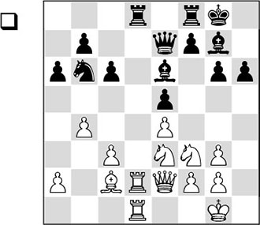
In this position it is not yet conceivable how White could invade on the seventh rank. The d7-point is well covered, but Botvinnik starts by systematically eliminating several defenders.
1.♗b3! ♖xd2
Surrendering the d-file, but after 1…♗xb3 2.axb3 White would also take control. Black cannot prevent White from taking possession of the d-file with ♘e3-c4, followed by ♖d2-d3.
2.♕xd2
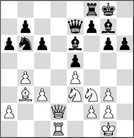
2…♗xb3?!
Much more tenacious resistance could have been put up with the mysterious move 2…♖c8!. The most important purpose of this rook move is to open a passage for the king to the centre via f8. Now it is not clear if White can actually take profit from the open d-file: 3.♕d6 ♕xd6 4.♖xd6 ♗xb3 5.axb3 ♔f8 6.c4 ♔e7, and Black is just in time to prevent the invasion of the rook on the seventh rank.
3.axb3 ♕e6
Now 3…♖c8 does not have the same effect. After 4.c4 ♖c7 5.♕d8+ ♕xd8 6.♖xd8+ ♔h7 White has accomplished a great deal: 7.c5 ♘d7 8.♘c4, and Black is in big trouble.
4.c4
White proceeds purposefully. The black knight is the next defender that must be chased away.
4…♗f6 5.c5
Right on time, as Black was ready for 5…♖d8. Now this would meet with 6.♕xd8+ ♗xd8 7.♖xd8+ ♔g7 8.cxb6.
5…♘c8 6.♕d7
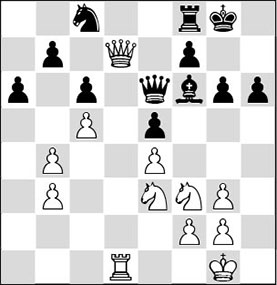
The aim is achieved! White has created a point of entry and will now have a field day on the seventh rank.
6…♕xb3
Also after 6…♖d8 7.♕xb7 ♖xd1+ 8.♘xd1 ♘e7 9.♘e3 ♕xb3 10.♘g4, White will win at least a pawn.
7.♕xb7 ♗g5
The position is highly problematic for Black. Also after 7…♘e7 8.♖d7 ♖e8 9.♘g4 ♕e6 10.♘xf6+ ♕xf6 11.♖d6 ♕g7 12.♕xa6, he will not be able to hold.
8.♘xg5 hxg5 9.♕xa6 ♘e7 10.♕b7 ♖e8 11.♕d7 ♔f8 12.♕d6 ♕xb4 13.♘g4 ♖a8 14.♕xe5 ♕b3 15.♖d7
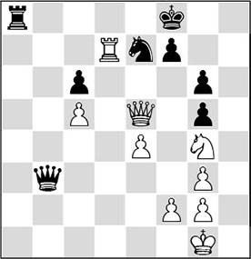
Not only has White won a pawn, he has also put his pieces on the right places for a final offensive.
15…♘g8 16.♕d6+ ♔g7 17.♕d4+ ♔h7 18.♘f6+ ♘xf6 19.♕xf6 ♔g8 20.♔h2 ♖f8 21.♕xc6 ♔g7 22.♕d5 ♕b1 23.♕d4+ ♔h7 24.c6
1-0
A2) Making use of a foothold
We call a square on an open file that is protected by an own pawn a ‘foothold’. This foothold can be used to enforce a doubling of rooks. Earlier in this book we spoke of a ‘springboard’. The idea is actually the same.
Both players are contesting the open c-file. White has the better prospects, since he has a foothold on this file. With his next move he makes use of it.
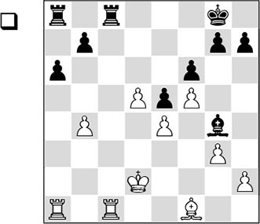
1.♖c5!
The c5-square is used as a springboard for the doubling of White’s rooks. An exchange on c5 would give White two dangerous pawns in the centre, so Black is forced to allow the doubling of the rooks.
1…♔f8
Obviously Black cannot attack the foothold with 1…b6, since after 2.♖xc8+ ♖xc8 3.♖xa6, he loses a pawn. Please note that in that case Black is not helped in any way by the possession of the c-file, since White controls all the points of entry on the file.
2.♖ac1 ♖d8
With a heavy heart, Black must leave the c-file with his rook.
Once again, White’s advantage after 2…♖xc5 3.bxc5 (in this case 3.♖xc5 would also be good) would be virtually decisive.
3.♖c7
The open file has been conquered, and now White invades on the seventh rank.
3…♖ab8 4.h3 ♗h5
Although White controls the only open file, and has even invaded with a rook, he is not home yet. He will have to find a way to make further progress, and for that purpose new reserves must be brought up.
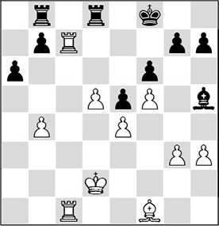
5.b5!
This is the right idea. White activates his bishop and plans, after an exchange on b5, to tie his opponent up completely with ♗b5-d7-e6.
5…axb5 6.♗xb5 ♗f7
If Black tries to trade off the dominant bishop with 6…♗e8, then 7.♖b1! is the most adequate answer. After 7…b6 8.g4 ♗xb5 9.♖xb5 ♖d6 10.♖b3, Black must allow either the loss of a pawn, or, eventually, the doubling of the white rooks on the seventh rank, with disastrous consequences.
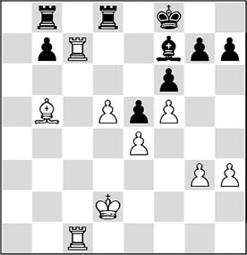
7.♔c3!
An excellent preparatory move. The king will be ideally posted on the b4-square, where it keeps the black passed pawn in check, and also prevents possible invasions by the black rook along the a-file.
7…g6 8.g4 gxf5 9.gxf5
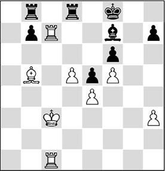
9…♗xd5
Black panics, realizing that he is lost, and gives up a piece. After a move like 9…♔g8, White would be allowed to pursue his plan. With the text move the black player swiftly puts himself out of his misery.
10.exd5 ♖xd5 11.♗c4 ♖d4 12.♖g1
1-0
A3) Temporarily closing off a file by a piece of your own, with the intention to double (or triple) behind it
In a position where one player controls more space, he has an interesting possibility to conquer a file. The following fragment makes this clear.
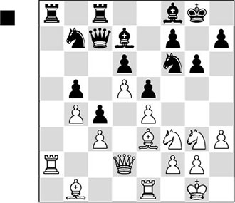
1…♕d8
Black signals that he wants to start a dispute for the possession of the a-file by an exchange on a2, followed by …♖a8. It is highly instructive how White prevents this plan and takes control of the a-file himself.
2.♗a7!!
The egg of Columbus! This bishop can’t be driven away, since Black is suffering from a huge lack of space. Especially the unfortunate knight on b7 is a liability. As long as the bishop is on a7, Black will not manage to exchange rooks. White can take his time to double rooks (or triple his major pieces). Then he can choose the right moment to retreat his bishop, after which the a-file will be his.
2…♘e8 3.♗c2
White prepares to double the rooks.
3…♘c7 4.♖ea1 ♕e7
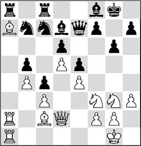
5.♗b1 ♗e8
The rooks have been doubled, but with just the possession of the a-file the game is not won yet. First White must try to open up a second front. Which preparations does he have to make for this?
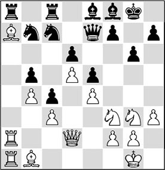
6.♘e2!
Black’s chronic lack of space makes him gasp for breath, and White can work on the strengthening of his position at his leisure.
The remainder of the game (on the theme of ‘how to build on a space advantage’) actually lies outside the scope of this chapter, but it is extremely instructive.
6…♘d8 7.♘h2 ♗g7 8.f4!
White starts his operations on the kingside.
8…f6
Black has decided to build a ‘defensive wall’, which White will have to try to break down.
9.f5!
The right decision. White opts for further expansion on the kingside. White is still the one who decides when the a-file will be opened.
9.fxe5?!, for example, would have been less good. Black has less space, and with this exchange White would give him a little more elbow room.
Also 9.g4?! was less recommendable. In itself, the idea behind this move is not bad, but the timing is wrong. White is better advised to wait with this action, since after 9…exf4 10.♘xf4 ♘f7 Black would suddenly be able to use the beautiful e5-square for one of his knights.
9…g5?!
By closing the position, Black hopes to keep the game within drawing margins. But in fact, he commits a serious inaccuracy, which eases White’s task. Now that the kingside is also closed, White must regroup his pieces. Our eye is caught by the h5-square. His first task is to aim his pieces at that square.
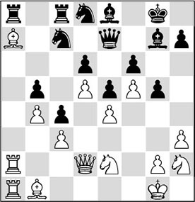
10.♗c2!
Karpov has finely sensed that this bishop no longer has any function on the queenside, and that it is better employed on the kingside now.
10…♗f7 11.♘g3 ♘b7
After 11…h5 12.♗d1 h4 13.♘gf1, it is questionable if White will succeed in exchanging the light-squared bishops. He can arrange a set-up with ♗d1-g4, ♕d2-e2, after which ♗h5 is a threat. But Black will not allow this exchange that easily; he will parry the threat with …♕e7-e8. Then, White continues with g2-g3. This pawn must be captured, as otherwise g3xh4 follows, creating a mortal weakness. After …h4xg3 ♘f1xg3, a knight appears, which covers the h5-square one more time. After that, White can force the desired exchange with ♗g4-h5. The consequences of that exchange are flawlessly demonstrated by Karpov in the game.
12.♗d1 h6?
With his last move, Black hasn’t exactly improved things. He is making White’s task very easy now.
13.♗h5
Thus, the light squares on the kingside are fatally weakened, enabling White to invade with several of his pieces via h5.
13…♕e8 14.♕d1!
Of course White keeps control of h5.
14…♘d8 15.♖a3
Now White directs his attention to the queenside again. If he can take possession of the a-file, in combination with possible threats on the kingside, Black, with his permanent lack of space, will be hard put to keep everything together.
15…♔f8 16.♖1a2
White prepares a possible tripling of major pieces. The retreat of the ♗a7 is permanently hanging over Black’s head like the Sword of Damocles.
16…♔g8 17.♘g4 ♔h8 18.♘e3 ♔g8 19.♗xf7+ ♘xf7
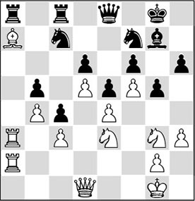
An important moment in the game. How can White increase his advantage now?
20.♕h5!
This way White further increases the pressure. The queen enters the black position with devastating force.
20…♘d8 21.♕g6!
The move with the greatest ‘paralysing’ effect. Black is completely tied up.
21…♔f8 22.♘h5
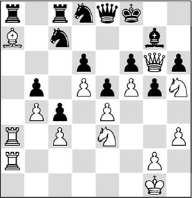
The last powerful move, after which Black resigned. Both the queen exchange and 20…♕e7 are met by 21.♘g4, sealing Black’s fate. Please note that White still hasn’t retreated his bishop from a7. But nevertheless Black has succumbed.
Karpov worked according to the principle ‘the threat is stronger than the execution’. Because Unzicker constantly had to reckon with a white invasion along the a-file, he was compelled to keep his anti-aircraft guns in their defensive positions. And this allowed White to take him out on the other side!
B) The file is (as yet) closed
If there is a field of tension between two pawns, a file can be opened. But if a file is opened, that doesn’t necessarily mean that one of the players will conquer it. We will study two different cases, where a file is conquered by means of a small trick.
B1) Doubling (or tripling) and then threatening to open the file
We have seen before that a space advantage can be a favourable factor. For instance, a player who has more space can conquer a file by doubling his rooks on a (closed) file, threatening to open it in the long run. Dr Max Euwe has worked out the following instructive example.
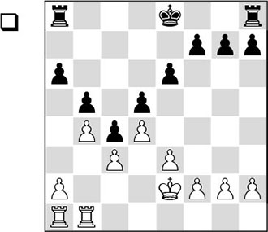
Strictly speaking, Black controls more space. Only on the a-file does White have more space, and he can create a field of tension between the a4- and b5-pawns. In this way, he will eventually be able to open up the a-file with a4xb5.
1.a4 ♔d7 2.♖a2!
This is the idea behind White’s manoeuvres. It made no sense to open the a-file at this point, as Black also has a rook on the a-file. By doubling first, White creates the concrete threat of a4xb5.
2…♔c7
Black cannot neutralize the field of tension by 2…bxa4, as then he will end up in a very unpleasant position after 3.♖xa4 ♔c7 4.♖ba1 ♔b7 5.♖a5. The weak pawn on a6 is a source of worry, and White can invade with his rooks via the a5-square.
The following sample sequence of moves illustrates what could happen: 5…♖hc8 6.♔f3 ♖d8 7.e4 dxe4+ 8.♔xe4 ♖dc8 9.♖e5 (9.f4 also deserves consideration) 9…♖c6 10.♖aa5 ♖ac8 11.d5 (White now opens the centre in order to force an entrance of his rooks into the black position) 11…exd5+ 12.♖axd5 ♖6c7 (12…♖8c7 is a slightly more tenacious defence) 13.♔d4 ♔b6 14.f4 ♖c6 15.g3 ♖8c7 16.h4 ♖c8 17.h5 ♖8c7 18.b5! axb5 19.♖xb5+ ♔a6 20.♖bc5, and White wins the pawn on c4.
3.♖ba1 ♔b7
Just in time, Black parries the threat to open the file.
4.♔f3
It is still too early for a liquidation to a pawn ending after 4.axb5 axb5. After 5.♖xa8 ♖xa8 6.♖xa8 ♔xa8, White would have no possibilities to invade with his king as yet. But 5.♖a5! would also be very strong: after 5…♖xa5 6.♖xa5 ♔b6 7.♔f3, Black can do nothing, and White can follow a similar plan to the one in the game.
4…f6
Black does not want to allow the king to e5, but it will soon become apparent that this pawn move is a weakening.
5.e4
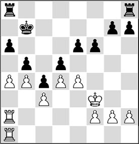
5…♖hd8
A waiting move is required, since 5…dxe4+ would not provide a solution either. After 6.♔xe4 ♖hd8 7.axb5 axb5 8.♖xa8 ♖xa8 9.♖xa8 ♔xa8 10.f4 ♔b7 11.d5 exd5+ 12.♔xd5, the pawn ending is winning for White.
However, after the text move White also liquidates.
6.axb5 axb5 7.♖xa8 ♖xa8 8.♖xa8 ♔xa8 9.exd5 exd5 10.♔f4 g6 11.g4 h6 12.h4 ♔b7 13.h5!
And Black can resign.
B2) Making use of a target for an attack on the king
A weakening of the king’s position can in some cases be an occasion for an attack on the king. We know that in the lines with opposite castling in the Dragon Variation of the Sicilian Defence, the white player pounces upon the pawn on g6 to open the h-file with h2-h4-h5xg6.
In the following game, the black pawn on h6 is the point of attack that triggers a crushing initiative.
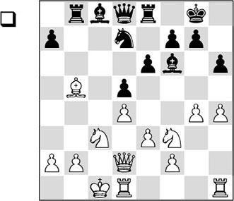
Black has sacrificed a pawn on b5 and is ready for action on the queenside. With his next move, White returns the favour, in order to start an attack himself.
1.g5!
Of course, White does not lose time. He opens a file on the kingside to start the attack. The pawn on h6 is the point of attack that White needs to open a file.
1…hxg5
Otherwise the g-file will be opened, with even more serious consequences.
2.hxg5 ♗xg5 3.♘xg5 ♕xg5 4.f4!
Another strong move. The second rank is opened with tempo, so that the queen can go to the h-file. At the same time, the centre is fixed.
4…♕f6 5.♕h2
An important point in White’s plan. The queen switch to the h-file indicates that he means business.
5…g6
An important moment. Black has managed to weather the first storm. Now White must pour new fuel onto his attack. This he does with
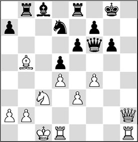
6.f5!
Now that the black king is feeling the draught, White tries to create more breaches in the defensive lines.
6…♕g7
The alternatives are not great: 6…gxf5 7.♖dg1+ ♔f8 8.♕d6+ ♖e7 9.♘xd5 exd5 10.♕xf6 ♘xf6 11.♖h8+ ♘g8 12.♖gxg8#; or 6…exf5 7.♕h7+ ♔f8 8.♘xd5 ♕g7 9.♕h8+ ♕xh8 (9…♕g8 also loses to 10.♗xd7 ♗xd7 11.♕f6 ♖e6 12.♖h8 ♖xf6 13.♖xg8+ ♔xg8 14.♘xf6+) 10.♖xh8+ ♔g7 11.♖xe8, and Black loses a decisive amount of material.
7.fxe6 fxe6 8.♖dg1
The g-file has become interesting for the other white rook.
8…♖f8 9.♗d3
Kasparov aims at the weak point g6.
9…♖f6 10.e4!
Now White breaks open the centre, and this brings about the decision.
10…e5 11.♘xd5 ♖f7
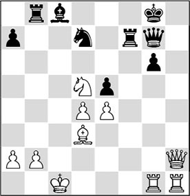
12.♖xg6!
1-0
It’s always nice to see a player being ‘h-filed’, as we say in the Netherlands.
14.3 Undermining an obstacle
Just like a bishop (on a diagonal), a rook can sometimes ‘bite on granite’ (on a half-open file). A rook on a half-open file is hindered by a well-protected enemy pawn. This obstacle prevents the rook from invading on the seventh rank. We distinguish two methods to attack such an obstacle on an open file.
A) ‘Corroding the granite’
B) Provoking a weakness and manoeuvring against it
A) ‘Corroding the granite’
A piece of granite must be destroyed by one of our own pawns. This undermining action is necessary to eliminate the obstacle, or weaken it. The following game demonstrates how this works.
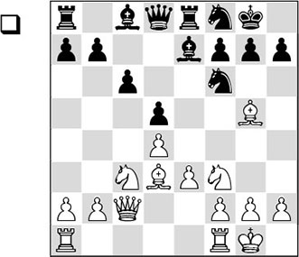
This is a characteristic position from the Exchange Variation of the Queen’s Gambit. White’s field of activity is the half-open c-file, whereas Black’s is the half-open e-file. Putting a rook on c1 makes little sense at this point. What use is the c-file to White if his pieces will stumble on the granite block on c6? The following move is the introduction to the correct plan.
1.♖ab1!
The start of a so-called ‘minority attack’. White prepares the b2-b4 push in order to ‘corrode’ the c6-point later with b4-b5. Because he starts action with three pawns against four on this flank, we use the term ‘minority attack’ here.
1…g6
Black can try to slow down the white raid with 1…a5, but it won’t make any difference if White continues with 2.a3.
2.b4 a6 3.a4 ♘e6 4.♗h4 ♘g7
The defensive plan that Black chooses is to try and exchange his bad bishop on c8 for White’s good one on d3. But we will soon see that this plan has its drawbacks.
5.b5!
The white action has developed quite quickly, since Black has invested much energy in preparing to exchange his bad bishop.
5…axb5 6.axb5 ♗f5
Black has carried out his plan, but in the meantime the pawn on c6 has become an easy target.
7.bxc6 bxc6 8.♘e5 ♖c8
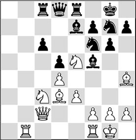
9.♖b7
An important secondary effect of his plan is that White now invades on the seventh rank with his rook.
9…♗xd3 10.♕xd3 ♖c7 11.♖xc7 ♕xc7 12.♖c1!
Now that the pawn on c6 has been severely weakened, White puts a rook on the half-open c-file.
12…♕b7
Black couldn’t get rid of his weakness tactically with 12…c5 (with the idea 13.dxc5?? ♕xe5), since after 13.♗xf6 ♗xf6 14.♘xd5, he is hoist with his own petard.
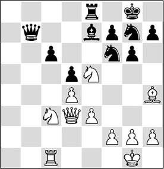
13.♕b1!
A strong move. After the queen exchange, the weakness on c6 will be felt even more strongly.
13…♕a6
Out of sheer necessity Black steps aside, but his pieces are not good anymore.
14.♘a2!?
In fact this is decisive. The main threat is 15.♗xf6 ♗xf6 16.♘b4.
In the game there followed:
14…♖a8
Also after 14…♖c8 15.♗xf6 ♗xf6 16.♘b4 ♕b7 17.♘exc6, White would have gained a valuable pawn.
15.♘b4?
With 15.♘xc6! White could have cashed in a pawn, after which the resistance would soon have been broken.
15…♗xb4 16.♕xb4 ♘e4
This also led to a white advantage, but it was converted into a full point only after a tough fight.
B) Provoking a weakness and manoeuvring against it
In the previous example, we saw that the black pawns on c6 and b7 constitute a strong block against a white rook on c1. By pushing his b-pawn White managed to ‘corrode’ the obstacle. There is yet another method to undermine such a strong point.
B1) Outpost
In My System, Nimzowitsch’s unsurpassed book, a section is devoted to the notions of ‘outpost’ and ‘outpost square’.
A diagram should explain a lot.
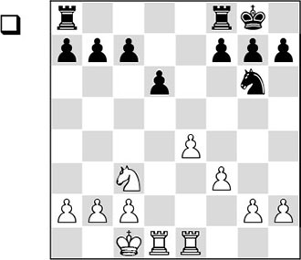
The teacher defines the ‘outpost square’ as a square that has to fulfil the following conditions:
In the diagram, d5 is the ‘outpost square’.
1.♘d5
Logical; this knight will make trouble in the black camp. It provokes a weakening.
1…c6
Black falls for it, and in so doing he more or less voluntarily labels his pawn on d6 as a problem child. If Black had kept defending with 1…♖ac8, we would have seen another example of ‘restricted marching’ with 2.♖d3!. After, for instance, 2…♖fe8 3.♖c3 (White wants to force his opponent to push his c-pawn) 3…c6 4.♘e3 ♖cd8 5.♖d1, Black is in big trouble. Here we see the function of the pawn on e4. Black does not manage to get rid of his weak d6-pawn with …d6-d5.
2.♘e3
The white knight has done its duty now that the opponent’s pawn formation has been undermined. Now that the knight has provoked a weakening, it can target this weakness, striving for f5 via e3.
B2) Manoeuvring against a weak pawn
Now that we have seen how we can create a weak pawn for our opponent, we need to know how we can target this new weakness. An earlier chapter – number 7 – has been devoted to weak pawns. There we paid extensive attention to the way in which a weak pawn should be besieged. The following diagram gives a schematic picture of this course of events.
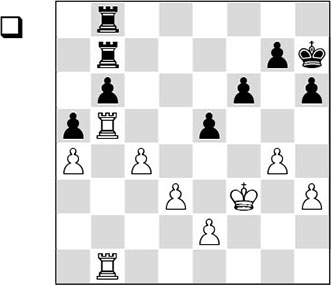
White’s first task is to take firm control of the square in front of the weak pawn. Then he can put pressure on the weakness in the enemy camp with his major pieces. In practice, the defender will experience various problems. His pieces will have trouble protecting the weakness adequately, due to lack of space. A second problem may be that he ends up in an unpleasant pin, as in the above diagram. Here, White wins a pawn with 1.c5, after which the threats of ♖xb6 or cxb6 cannot be parried.
The most attractive target on a half-open file is a backward pawn. It is weak, since it cannot be protected by fellow pawns. Another characteristic of a backward pawn is that the defender also lacks control of the square in front of it. A player who has such a pawn is mostly condemned to prolonged suffering on the rack. The following game shows such a siege in practice.
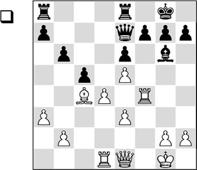
White will conduct his operations along the f-file, and Black will conduct his along the c- and d-files. The course of the game will show that the f-file is more important than the c- and the d-files put together.
1.h4!
White points his arrows at the f7-pawn, which is well protected by the bishop for the moment. With the text move White puts the question to the bishop.
1…cxd4 2.exd4 ♖ac8 3.♕e2 ♖c7 4.♖df1 h5
This is a weakening pawn move – exactly what White was waiting for. Black parries the threat of 5.h5, but probably 4…♖ec8 was better.
5.♖1f3 ♖ec8 6.♗d3
At the right moment, White exchanges the bishops, thereby robbing the pawn on f7 of an important protector.
6…♗xd3 7.♖xd3
Now the pawn on h5 is hanging, and Black has to allow a new weakening.
7…g6
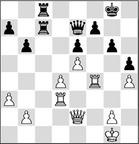
Bitter necessity. From this moment on, the pawn on f7 is a backward pawn. The f6-square is definitively in White’s hands, while White can use the f-file to lay siege to the pawn.
8.♖g3 ♔h7 9.♖g5 ♕f8
The weaknesses allow White to create threats against the black king. In the meantime it has become clear that the f-file is an important weapon in White’s hands, whereas the open c-file and the half-open d-file hardly offer Black anything. Also after 9…♖c1+ 10.♔h2 ♕e8 11.♕f3, Black would slowly get into trouble.
10.♕e4 ♕h6
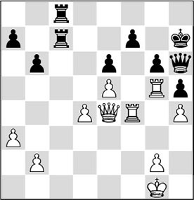
11.d5!
Now that the black queen is out of play and the pressure is at its peak, White breaks open the centre so as to besiege the f7-pawn from the other side.
11…exd5 12.♕xd5 ♕f8 13.e6 ♕c5+
Black takes refuge in a rook ending with a minus pawn. But Keres has little trouble to net the point.
14.♕xc5 bxc5 15.exf7 ♔g7 16.f8♕+ ♖xf8 17.♖xf8 ♔xf8 18.♖xg6 c4 19.♖g5 ♖b7 20.♖xh5 ♖xb2 21.♖c5 ♖c2 22.♔h2 ♔e7 23.h5 c3 24.♖c6
1-0
14.4 Exploiting an open file
We have reviewed different aspects of the open file. In practice, more factors can play a role.
In the first chapter we already touched on the fact that it is difficult to recognize when a certain feature is valid and when it isn’t.
Studying model games and putting the problems into words can help you to get more grip on the game.
QO 12.4 (D55)
1.d4 e6 2.c4 d5 3.♘f3 ♗e7 4.♘c3 ♘f6 5.♗g5 0-0 6.e3 a6 7.cxd5 exd5 8.♗d3 c6 9.♕c2 ♘bd7
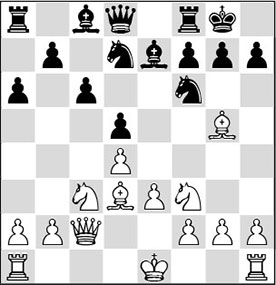
In this position, White has several plans. Earlier in this chapter we have seen how White can opt for a minority attack. Here, Black has lost some time by playing …a7-a6 as well as …c7-c6. For Botvinnik this is the signal for an attack!
10.g4!
A totally unexpected thrust on the flank.
10…♘xg4?
Neither is 10…h6 11.♗f4 appealing for Black. The pawn move would provide the target that White needs to open a file against the black king. After 11…♘xg4? 12.♖g1, Black is forced to weaken his king position.
10…g6 was the best choice according to Kasparov. Evidently, Alatortsev was shocked by his opponent’s aggressive approach, which prevented him keeping a cool head.
11.♗xh7+ ♔h8 12.♗f4
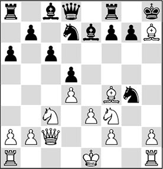
12…♘df6
Of course, 12…g6 was crucial, but then White can hammer away lustily on the kingside: 13.♗xg6 fxg6 14.♕xg6 ♘gf6 (after both 14…♘df6 15.h3 and 14…♖xf4 15.exf4 ♘f8 16.♕h5+ ♘h7 17.♖g1 ♘f6 18.♘e5, White wins in the attack. 18…♘xh5 19.♘f7# is an amusing line) 15.♘e5, and the black king’s position is in tatters.
13.♗d3 ♘h5
There is nothing sensible to be suggested for Black. The g-file is open and Black is not well positioned to put up an adequate defence.
14.h3 ♘gf6 15.♗e5 ♘g8?!
Perhaps 15…♘d7 could be tried, in order to force the dangerous attacking bishop on e5 to declare its intentions.
16.0-0-0 ♘h6 17.♖dg1
White aims all his pieces at the poor black king, making use of the open g-file.
17…♗e6 18.♕e2
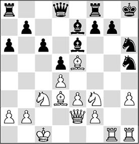
18…♗f5?
Black’s position was already problematic, but this move hastens the end.
Only with 18…♘f6 could Black have ploughed on. With 19.♖g5! White would then further increase the pressure.
19.♗xf5 ♘xf5 20.♘h4!
With this blow Botvinnik finishes this smooth attacking game. Alatortsev duly resigned.
Exercises
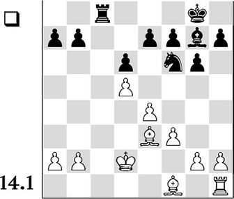
How does White obtain an advantage in a subtle way by harassing the black rook from the c-file?
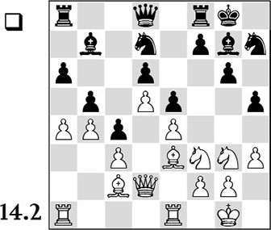
White has obtained a rather significant space advantage in the centre. Furthermore, there is a field of tension between the pawns on a4 and b5. Can you conceive a plan that is in accordance with these features?
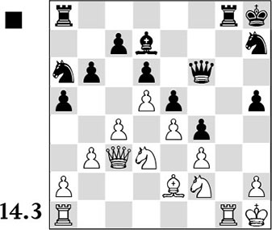
In the diagram position, the struggle for the only open file – the g-file – is crucial. Is there a way for Black to make optimal use of the g-file? Indicate the plan schematically.
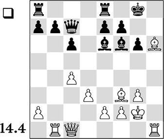
In this position White has opened the h-file in order to start an attack on the black king. Which manoeuvre is his best continuation, and do you see which threats will be introduced into the position?